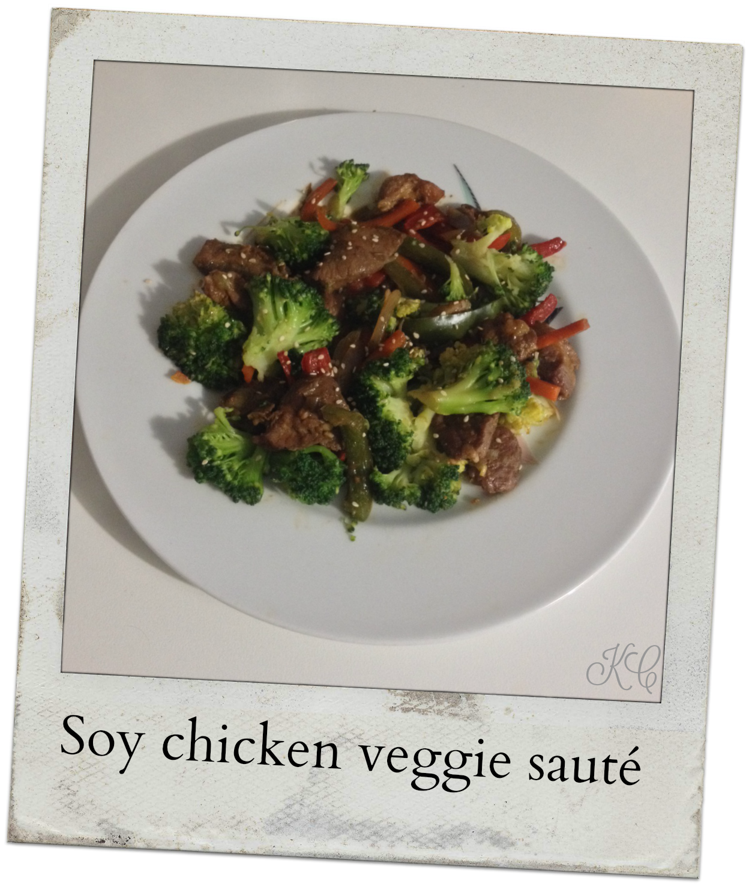
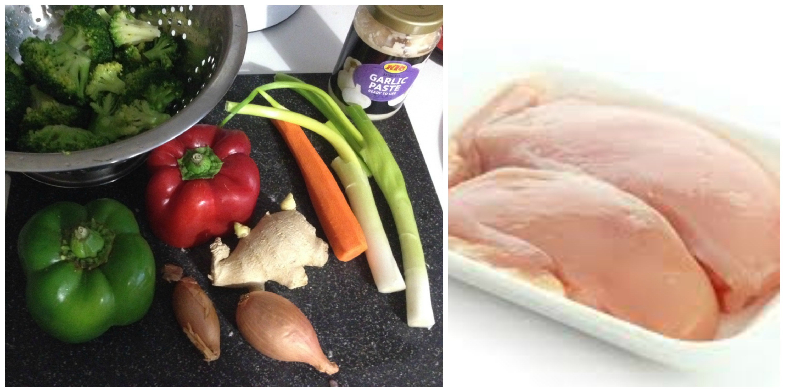
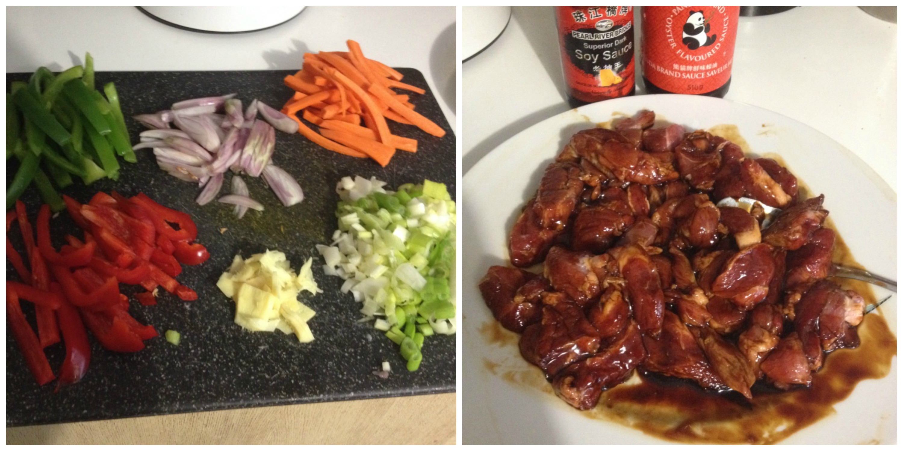
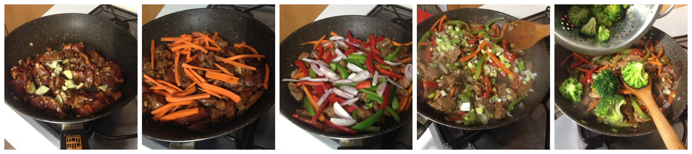

Soy chicken veggie sauté¶

- Serves: 4
- Type: main
Background¶
This is one of my “What I am going to cook?” best solutions. Also, this recipe makes me think nostalgically about good Chinese food I used to eat in Peru. I learnt to cook this plate observing my father (who is a Chinese food lover and a quiet chef) during years, he usually prepare it with a spectacular “chancho asado” (oven roast pork), but since sometimes this is my meal savior I keep it simple. This is healthy recipe and it is easy to make. You can use also pork or beef instead of chicken or even shrimps and tofu.
Ingredients¶
Ingredients
- 1 small green bell pepper
- 1 small red bell pepper
- 2 carrots
- 2 scallion
- 3 garlic gloves or 1 tablespoon garlic paste
- A large piece ginger root
- 2 green onion sticks
- 300 grams Mid-cooked brocoli
- 1 chicken breast
- 2 tablespoon soy sauce
- 1 tablespoon oyster sauce
- 1/2 tablespoon chili sauce (if you have doubanjiang sauce you can use it instead)
- 1 teaspoon ginger powder
- Salt and white pepper to taste
- Toasted sesame seeds
- 1 tablespoon sesame oil
- Vegetable oil (not exceed!)
Steps¶
Cut the meat (chicken) in dices
Marinate the chicken with the ginger powder, a little pinch of chili sauce (or doubanjiang sauce), half soy and oyster sauce, white pepper and a bit of salt. Set aside for a least 10 minutes or during the time you cut the vegetables. More time the meat is marinated it becomes tastier.
Mince the garlic
Cut in thick slices all the vegetables
Slice the vegetables and cut the meat
Heat the sesame oil and the vegetable oil without burning it in a wok or fry pan
Add the chicken and cook all the sides in medium heat
When chicken will be cooked add the garlic and ginger, stir and cook for a minute
Add the carrots, cook for a few minutes (3-5 minutes)
Add the scallion, and peppers cover with a lid and cook for 3 minutes, pour 1 tablespoon soy sauce and the hot sauce.
Add the broccoli, cook with the lid on for another 2 minutes
Serve and decorate with sesame seeds.
Sautéing the vegetables
Can be served with¶
- White rice
- Fry wanton
- Noodles